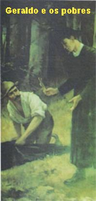
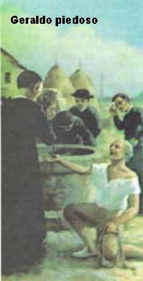
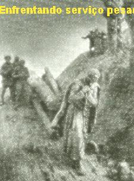

APÓSTOLO E PROFETA
DE NOVO EM CAPOSELE
Seu Superior em Caposele era o
Padre Cajone, um homem que também gostava de rezar e tinha um coração cheio de
bondade, por isso mesmo, logo 
Desde o ano 1753, o número de pobres em Caposele aumentava diariamente de maneira visível, em face da ausência de trabalho e do péssimo resultado das colheitas agrícolas na região. Todos os dias, de manhã à noite, se juntavam na portaria do Convento a procura de comida. Faziam uma algazarra que importunava e até surgia brigas, na busca de conseguir o primeiro lugar na fila. Pelas suas apreciáveis qualidades, o Padre Superior pediu a Geraldo que cuidasse da portaria do Convento. Foi ali que ele se converteu num verdadeiro Apóstolo dos Pobres. Mal o dia começava a clarear, a campainha soava, e para lá ia o Geraldo bem depressa. Já sabia o que era. Como ele era muito carinhoso, sabia que os seus pobres gostavam de uma conversinha, tinham necessidade não só de comida, mas também de atenção, carinho e amor. E durante a prosinha ele aproveitava para colocar um pouco de DEUS. Que transformação admirável! Aqueles simples e humildes pobrezinhos, muitos se converteram e abriram o seu coração a DEUS! Quantas conversões ocorreram!
Havia dias que eram tantos, que Geraldo acabava se esquecendo da Comunidade e distribuía tudo o que havia em casa. Mas ele fazia isto com a certeza de que DEUS jamais deixaria faltar em casa, qualquer coisa.
Ser pobre já é um sofrimento, mas ser pobre e doente, sem dúvida, é uma grande provação. E isto não passava despercebido a Geraldo. Sua caridade, seu amor, o desejo de levar um pouco de alegria àqueles miseráveis era tão grande, que ele procurava dar maior atenção aos pobres que estavam doentes. A eles dispensava mais carinho e atenção. Quando era preciso, ia à despensa, pegava o que havia de melhor e preparava uma alimentação adequada para seus pobres doentinhos.
Geraldo costumava dizer: “Para os doentes pobres precisamos sacrificar tudo, porque eles são a imagem de JESUS. A Eucaristia é o CRISTO invisível e o pobre doente é o CRISTO visível”.
Às vezes Geraldo até criava casos com o cozinheiro que não o via com bons olhos. Isto por que, concentrado em atender as necessidades dos pobres, ele chegava correndo na cozinha com uma pilha de vasilhas para encher com comida. Mas a comida que estava sendo preparada no fogão era para a Comunidade, pois já estava no horário de servir os Redentoristas. Mas Geraldo continuava firme no seu propósito, enchendo as vasilhas dos pobres com aquela comida. O cozinheiro perdeu a paciência e falou: “Que negócio é esse Geraldo? Você não vai deixar nada para a Comunidade?” Calmamente Geraldo lhe respondeu: “DEUS providenciará”. E continuou enchendo as vasilhas, e logo, levando-as, foi correndo para a portaria.
A Comunidade chegou para o almoço, o cozinheiro estava branco de ódio. Não disse uma palavra. Foi servido o almoço. Ele só esperava o Padre Superior dizer alguma coisa para “cuspir marimbondos em cima do Geraldo” e acabar com aquela mania de pobres. Mas, que surpresa! Todos almoçaram bem e ficaram satisfeitos! Não faltou nada! Saíram do refeitório aparentemente mais alegres e felizes, do que habitualmente! Aconteceu um milagre? A verdade é que o Irmão cozinheiro observando aquele fato ficou comovido, e começou a acreditar mais no Geraldo e na sua santidade.
A FOGUEIRA DE DEUS

Aquele dia estava demais. Era tardezinha, um vento frio maltratava a vegetação e castigava ali na porta do Convento um batalhão de pessoas aguardando o jantar. Estavam encorujados e tiritando de frio. Geraldo não aguentou de comoção e chegou a chorar vendo as criancinhas que o rodeavam, de pés nus e tremendo de frio. Ficou com muita pena de todos eles. Alguma coisa precisava ser feita. Ele teve uma idéia. Mandou que todos saíssem e catassem nos arredores a lenha que pudessem transportar.
Chegaram carregados. Rapidamente montaram uma big fogueira e atearam fogo. Todos puderam se aquecer. Era a fogueira de DEUS.
Na verdade, quanto mais aumentava a miséria, muito mais aumentava a confiança de Geraldo na Providência Divina. E quanto mais crescia a sua confiança em DEUS (se podemos nos expressar assim) mais auxílios do Céu concretamente apareciam. Houve oportunidades em que Geraldo ficava até zonzo e surpreso com as coisas que aconteciam. Muitas vezes encontrou embrulhos depositados na portaria do Convento. E dentro daqueles pequenos embrulhos havia apreciáveis quantias de dinheiro, que ele utilizava, devidamente autorizado pelo Padre Superior, para comprar o necessário aos seus irmãos pobrezinhos. De onde vinha o dinheiro ninguém sabia, mas sabia sim, qual seria a finalidade dele.
CATEQUISTA E PROFETA
Em Caposele vivia o Felipe Falcone, um flautista que era cego e pobre. Também era um dos melhores amigos do Geraldo. Todos os dias ele estava à porta do Convento, entre os pobres, para receber alguma coisa e aproveitava para ajudar de algum modo. Geraldo mandava todos se assentarem no chão e para distraí-los, Felipe tocava músicas na sua flauta. Depois de um pequeno tempo, Geraldo começava a sua Catequese, falando de maneira simples e objetiva, atraindo e prendendo a atenção de todos. Ele era um experimentado catequista que sabia explicar o Amor de DEUS por todos nós e a necessidade das pessoas cultivarem com fidelidade um sincero e dedicado amor ao SENHOR e a NOSSA SENHORA, MÃE DE DEUS e Nossa Mãe.
Aos poucos o auditório começou a engrossar e com o tempo, até gente que não era pobre, comparecia para ouvir as palavras dele. Satisfeitos e instruídos com as palavras do Geraldo, ali também deixavam uma contribuição financeira, que logo ia servir em algum benefício aos pobres.
Esse amor de Geraldo pelos pobres
tem uma explicação sobrenatural. É a Vontade de DEUS. O amor aos pobres é a expressão
mais concreta da caridade que se pode praticar. E sem dúvida, Geraldo sempre
procurou copiar os ensinamentos e as atitudes de JESUS. Então não é difícil
lembrar aqui a palavra que NOSSO SENHOR falou sobre ELE Mesmo:
“O ESPÍRITO DO SENHOR está sobre MIM,
porque ELE ME ungiu para 
MESTRE DE OBRAS
Em Caposele, o Mosteiro da Comunidade Religiosa já estava pequeno e acanhado, para atender as necessidades dos Redentoristas. Por essa razão, decidiram construir uma Casa maior, mais bem equipada e com mais recursos. O Padre Superior precisava de um homem de ação para supervisionar as obras. Escolheu Geraldo. Ele, embora entendendo muito pouco de construção, não recusou, aceitou o cargo, pois tinha a certeza de que DEUS irá ajudá-lo, isto porque, na sua vida a única coisa que o movimentava é o amor a DEUS e aos seus Irmãos.
Todos os dias bem cedo, Geraldo era visto entre os operários, fazendo anotações e trocando idéias. Dava tudo de si. Sua atividade e dedicação foram de grande importância para essa construção.
Um dia, o Padre Superior falou com ele:
- “Olhe, Irmão, temos de parar a obra, não temos mais dinheiro”.
Geraldo percebeu que o Padre Superior estava triste e preocupado, por isso, tentou animá-lo:
- “Senhor Padre, faça um pedido por escrito a JESUS Sacramentado!”
O Padre Superior achou aquilo muito esquisito, mas atendeu a solicitação. Escreveu e entregou o bilhete a Geraldo.
Geraldo saiu correndo, entrou na Igreja e colocou o bilhete sobre o Altar. Aproximou-se do Sacrário e bateu suavemente na portinha, dizendo:
- “SENHOR, aqui está um pedido nosso. Aguardamos resposta.” E voltou para o trabalho.
O dia do pagamento dos operários estava se aproximando. Seria no próximo sábado. Na noite de Sexta-feira, Geraldo colocou-se ao pé do Altar e ali passou a noite, rezando para obter a resposta de JESUS.
De manhã, bateu à porta do Sacrário com um pouco mais de força. Ele precisava ir, estava aflito, mas queria apenas lembrar ao “PAI dos pobres” , que não se esquecesse de seus filhos.
Estava descendo os degraus do Altar, quando soou a campainha da portaria do Convento. Correu para ver quem era... Não havia ninguém. Olhou cuidadosamente e viu encostado num canto da parede duas sacolas no chão. Surpreso, caminhou para verificar... Um imenso sorriso de alegria ocupou toda a sua face. Era o dinheiro necessário ao pagamento dos empregados da Obra.
Geraldo voltou ao Sacrário e de joelhos, com lágrimas nos olhos, amorosamente agradeceu a JESUS.